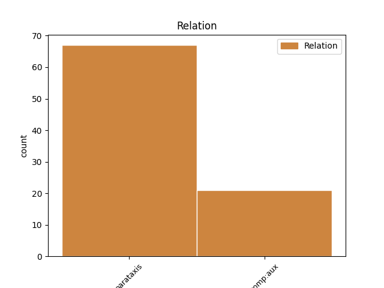
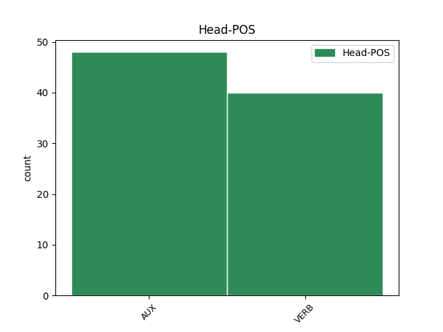
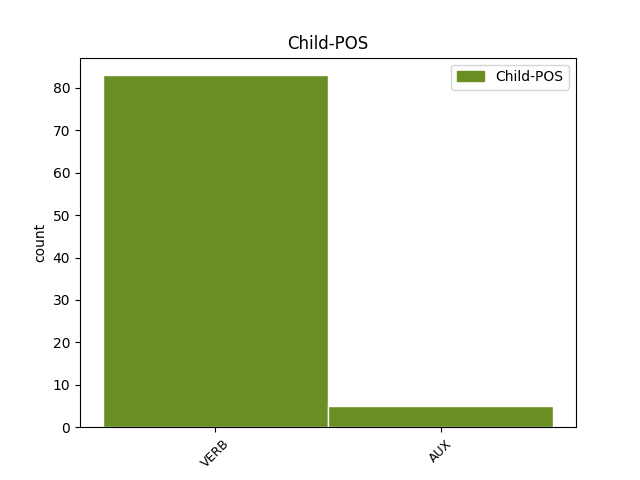

Distribution of features within this leaf



Agreement Rules sorted by frequency.
- When the dependent token is the parataxis(parataxis) of the head token,
1 for _ _ _ _ 0 _ _ _
2 # _ _ _ _ 0 _ _ _
3 det _ _ _ _ 0 _ _ _
4 var _ _ _ _ 0 _ _ _
5 jo _ _ _ _ 0 _ _ _
6 e _ _ _ _ 0 _ _ _
7 det _ _ _ _ 0 _ _ _
8 var vere AUX _ Mood=Ind|Tense=Past|VerbForm=Fin 0 _ _ _
9 jo _ _ _ _ 0 _ _ _
10 ein _ _ _ _ 0 _ _ _
11 e _ _ _ _ 0 _ _ _
12 ein _ _ _ _ 0 _ _ _
13 hjelp _ _ _ _ 0 _ _ _
14 til _ _ _ _ 0 _ _ _
15 sjølvhjelp _ _ _ _ 0 _ _ _
16 for _ _ _ _ 0 _ _ _
17 å _ _ _ _ 0 _ _ _
18 komme _ _ _ _ 0 _ _ _
19 fram _ _ _ _ 0 _ _ _
20 på _ _ _ _ 0 _ _ _
21 havet _ _ _ _ 0 _ _ _
22 # _ _ _ _ 0 _ _ _
23 meinte meine VERB _ Mood=Ind|Tense=Past|VerbForm=Fin 8 parataxis _ _
24 dei _ _ _ _ 0 _ _ _
25 . _ _ _ _ 0 _ _ _
1 å _ _ _ _ 0 _ _ _
2 ja _ _ _ _ 0 _ _ _
3 når _ _ _ _ 0 _ _ _
4 dei _ _ _ _ 0 _ _ _
5 har ha AUX _ Mood=Ind|Tense=Pres|VerbForm=Fin 0 _ _ _
6 dei _ _ _ _ 0 _ _ _
7 der _ _ _ _ 0 _ _ _
8 tar ta VERB _ Mood=Ind|Tense=Pres|VerbForm=Fin 5 comp:aux _ _
9 ungane _ _ _ _ 0 _ _ _
10 nedi _ _ _ _ 0 _ _ _
11 han _ _ _ _ 0 _ _ _
12 heng _ _ _ _ 0 _ _ _
13 han _ _ _ _ 0 _ _ _
14 på _ _ _ _ 0 _ _ _
15 ryggen _ _ _ _ 0 _ _ _
16 ? _ _ _ _ 0 _ _ _
Disagree Examples:
1 og _ _ _ _ 0 _ _ _
2 hadde ha VERB _ Mood=Ind|Tense=Past|VerbForm=Fin 0 _ _ _
3 ein _ _ _ _ 0 _ _ _
4 to _ _ _ _ 0 _ _ _
5 tre _ _ _ _ 0 _ _ _
6 griser _ _ _ _ 0 _ _ _
7 da _ _ _ _ 0 _ _ _
8 veit vite VERB _ Mood=Ind|Tense=Pres|VerbForm=Fin 2 parataxis _ _
9 du _ _ _ _ 0 _ _ _
10 som _ _ _ _ 0 _ _ _
11 dei _ _ _ _ 0 _ _ _
12 hadde _ _ _ _ 0 _ _ _
13 i _ _ _ _ 0 _ _ _
14 gamle _ _ _ _ 0 _ _ _
15 dagar _ _ _ _ 0 _ _ _
16 . _ _ _ _ 0 _ _ _
1 og _ _ _ _ 0 _ _ _
2 så _ _ _ _ 0 _ _ _
3 blei bli VERB _ Mood=Ind|Tense=Past|VerbForm=Fin 0 _ _ _
4 du _ _ _ _ 0 _ _ _
5 jo _ _ _ _ 0 _ _ _
6 som _ _ _ _ 0 _ _ _
7 ein _ _ _ _ 0 _ _ _
8 neger _ _ _ _ 0 _ _ _
9 da _ _ _ _ 0 _ _ _
10 veit vite VERB _ Mood=Ind|Tense=Pres|VerbForm=Fin 3 parataxis _ _
11 du _ _ _ _ 0 _ _ _
12 # _ _ _ _ 0 _ _ _
13 så _ _ _ _ 0 _ _ _
14 svart _ _ _ _ 0 _ _ _
15 som _ _ _ _ 0 _ _ _
16 ein _ _ _ _ 0 _ _ _
17 feiar _ _ _ _ 0 _ _ _
18 . _ _ _ _ 0 _ _ _
1 så _ _ _ _ 0 _ _ _
2 det _ _ _ _ 0 _ _ _
3 gjekk _ _ _ _ 0 _ _ _
4 # _ _ _ _ 0 _ _ _
5 måtte måtte AUX _ Mood=Ind|Tense=Past|VerbForm=Fin 0 _ _ _
6 bruke _ _ _ _ 0 _ _ _
7 alle _ _ _ _ 0 _ _ _
8 strekar _ _ _ _ 0 _ _ _
9 som _ _ _ _ 0 _ _ _
10 var _ _ _ _ 0 _ _ _
11 for _ _ _ _ 0 _ _ _
12 å _ _ _ _ 0 _ _ _
13 få _ _ _ _ 0 _ _ _
14 det _ _ _ _ 0 _ _ _
15 til _ _ _ _ 0 _ _ _
16 å _ _ _ _ 0 _ _ _
17 gå _ _ _ _ 0 _ _ _
18 veit vite VERB _ Mood=Ind|Tense=Pres|VerbForm=Fin 5 parataxis _ _
19 . _ _ _ _ 0 _ _ _
1 å _ _ _ _ 0 _ _ _
2 vi _ _ _ _ 0 _ _ _
3 køyrde køyre VERB _ Mood=Ind|Tense=Past|VerbForm=Fin 0 _ _ _
4 # _ _ _ _ 0 _ _ _
5 fast _ _ _ _ 0 _ _ _
6 veit vite VERB _ Mood=Ind|Tense=Pres|VerbForm=Fin 3 parataxis _ _
7 du _ _ _ _ 0 _ _ _
8 for _ _ _ _ 0 _ _ _
9 # _ _ _ _ 0 _ _ _
10 for _ _ _ _ 0 _ _ _
11 det _ _ _ _ 0 _ _ _
12 var _ _ _ _ 0 _ _ _
13 e _ _ _ _ 0 _ _ _
14 dårlege _ _ _ _ 0 _ _ _
15 krefter _ _ _ _ 0 _ _ _
16 i _ _ _ _ 0 _ _ _
17 desse _ _ _ _ 0 _ _ _
18 her _ _ _ _ 0 _ _ _
19 . _ _ _ _ 0 _ _ _
1 ja _ _ _ _ 0 _ _ _
2 eg _ _ _ _ 0 _ _ _
3 slutta _ _ _ _ 0 _ _ _
4 jo _ _ _ _ 0 _ _ _
5 da _ _ _ _ 0 _ _ _
6 eg _ _ _ _ 0 _ _ _
7 blei _ _ _ _ 0 _ _ _
8 # _ _ _ _ 0 _ _ _
9 da _ _ _ _ 0 _ _ _
10 eg _ _ _ _ 0 _ _ _
11 blei bli VERB _ Mood=Ind|Tense=Past|VerbForm=Fin 0 _ _ _
12 sytti _ _ _ _ 0 _ _ _
13 år _ _ _ _ 0 _ _ _
14 eg _ _ _ _ 0 _ _ _
15 veit vite VERB _ Mood=Ind|Tense=Pres|VerbForm=Fin 11 parataxis _ _
16 du _ _ _ _ 0 _ _ _
17 . _ _ _ _ 0 _ _ _